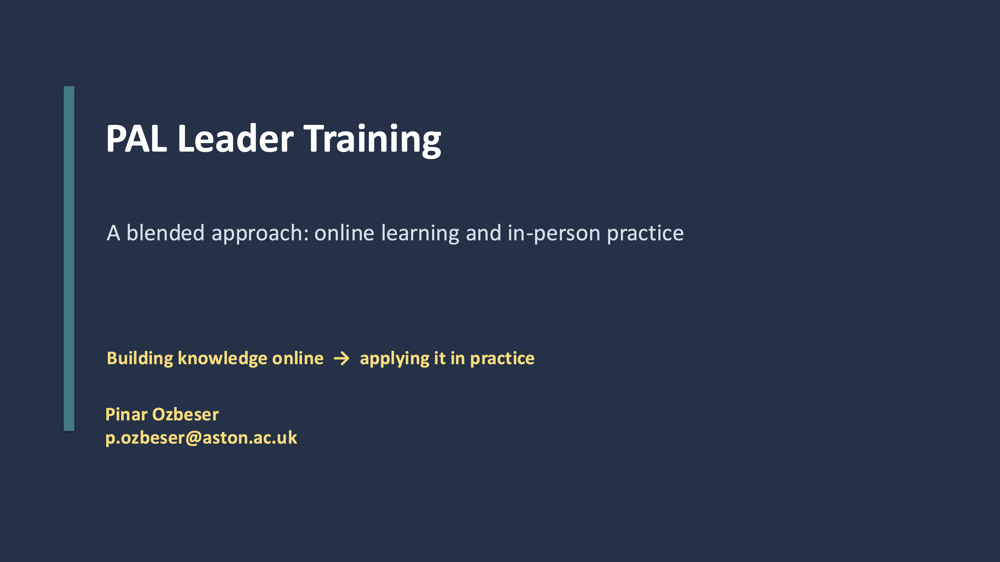

Network Meetings
The Maths PAL/PASS Network meets at a couple of strategic points in the academic year. Each meeting has a specific theme, and we invite members to present on their experiences and insights. The meetings are held online, making it possible for members from different locations to participate.
If you would like to attend or be kept informed about upcoming meetings, please join the mailing list.
Upcoming Meetings
The next meeting will be held in the week beginning Monday 7th December 2026, or the following week beginning Monday 14th December 2026. We will contact network members soon for their availability.
Past Meetings (most recent first)
Meeting 2
Recruiting and training excellent peer-support leaders
Thursday 27th August 2026
The meeting focused on how to recruit and train excellent peer-support leaders.
Pinar Ozbeser from Aston University spoke about her experiences generating resources and facilitating sessions to train peer leaders.

View/ download the slidesWe also discussed the first collaborative project of the network which will be on peer leader training.
Meeting 1
Existing peer support schemes in mathematics in UKHEIs
Friday 19th June 2026
The network coordinators, Dr Holly Barker and Dr Simon Fairfax, gave short presentations before attendees took part in extended discussions. Topics drawn from our Spring 2026 survey included:
- What peer support is and how it is delivered
- Attendance and engagement
- Peer leaders and training
- Establishing effective peer schemes
We also discussed the future of the network, including the mailing list, this website and future meetings. Slides were shared with network members by email and are available below.
.png) View/ download the slides
View/ download the slides